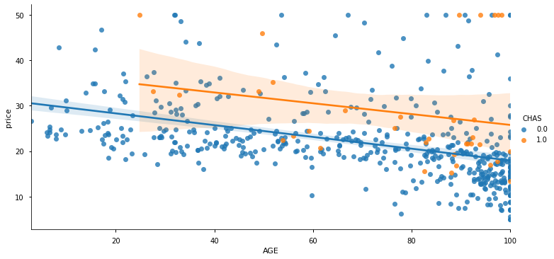
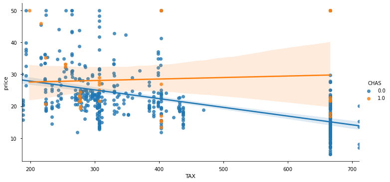
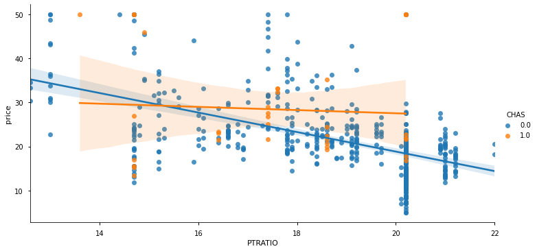
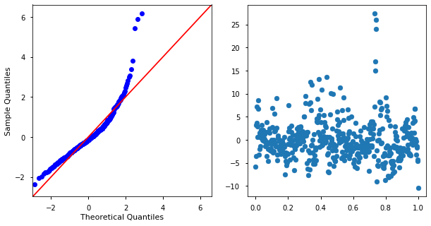
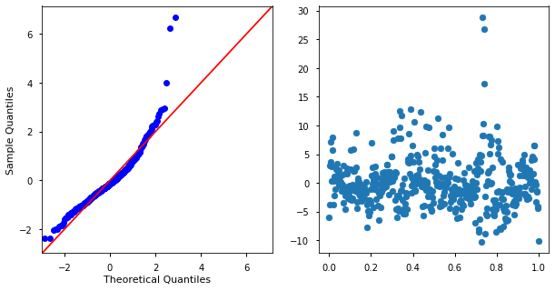
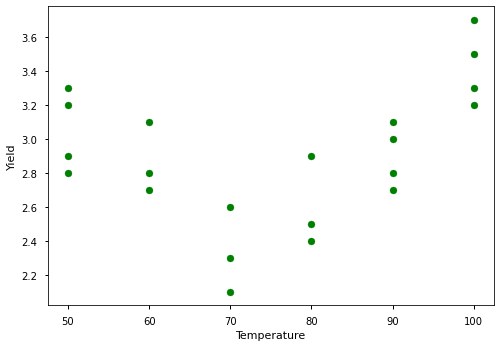
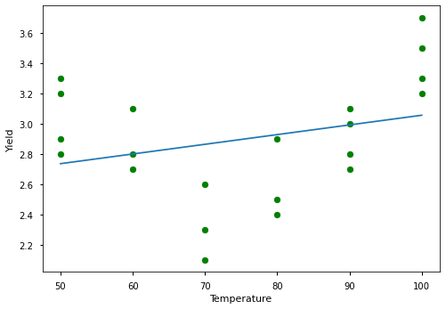
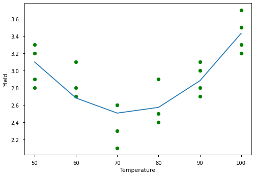
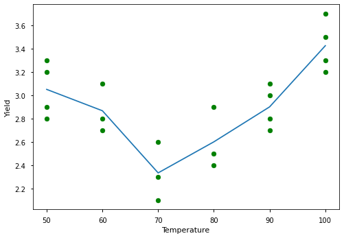

Topic 20: Extensions to Linear Models#
onl01-dtsc-ft-022221
04/13/21
Objectives#
DISCUSSION:
Discuss interactions between variables
Discuss using dictionaries for scrubbing the whole df in a few lines of code.
Discuss polynomial regressions.
Discuss the Bias vs Variance trade-off.
APPLICATION:
Linear Regression with Boston Housing data set
Topics Covered in Section 20#
Interactions
Polynomial Regression
Bias-Variance Trade Off
Interactions#
What is an interaction?#
When variables interact to cause an effect to another variable but is not the sum of their parts
“An interaction is a particular property of two or more variables where they interact in a non-additive manner when affecting a third variable” - Section recap

In our example, the interaction plot was composed out of categorical predictors (countries and diet type), but interactions can occur between categorical variables or between a mix of categorical variables and continuous variables!
Confounding factor#
This means that the “Country” and “Diet” affect weight loss in a non-additive matter. If we’re mostly interested in the effect of diet on weight loss (which seems to be plausible here), we say that “Country” is a confounding factor of the effect of “Diet” on weight loss.

Why is important to account for interactions?#
“Not accounting for them might lead to results that are wrong.”
You’ll also notice that including them when they’re needed will increase your \(R^2\) value!
Replacing 2 individual columns with their interaction column can reduce the overall number of features.
One way of addessing multicollinearity is to replace 2 multicollinear columns with the interaction term.
When should we use interactions?#
Whenever it can help the model, but not required.
Can use in hypothesis testing as well (for ANOVAs)
Using seaborn to view interactions#
~~
sns.factorplot~~sns.catplotsns.FacetGrid
# !pip install -U fsds
from fsds.imports import *
import scipy.stats as stats
import statsmodels.api as sms
import statsmodels.formula.api as smf
pd.set_option('display.max_columns',0)
plt.style.use('seaborn-notebook')
fsds v0.3.2 loaded. Read the docs: https://fs-ds.readthedocs.io/en/latest/
| Handle | Package | Description |
|---|---|---|
| dp | IPython.display | Display modules with helpful display and clearing commands. |
| fs | fsds | Custom data science bootcamp student package |
| mpl | matplotlib | Matplotlib's base OOP module with formatting artists |
| plt | matplotlib.pyplot | Matplotlib's matlab-like plotting module |
| np | numpy | scientific computing with Python |
| pd | pandas | High performance data structures and tools |
| sns | seaborn | High-level data visualization library based on matplotlib |
df = fs.datasets.load_boston()
df.head()
| CRIM | ZN | INDUS | CHAS | NOX | RM | AGE | DIS | RAD | TAX | PTRATIO | LSTAT | price | |
|---|---|---|---|---|---|---|---|---|---|---|---|---|---|
| 0 | 0.00632 | 18.0 | 2.31 | 0.0 | 0.538 | 6.575 | 65.2 | 4.0900 | 1.0 | 296.0 | 15.3 | 4.98 | 24.0 |
| 1 | 0.02731 | 0.0 | 7.07 | 0.0 | 0.469 | 6.421 | 78.9 | 4.9671 | 2.0 | 242.0 | 17.8 | 9.14 | 21.6 |
| 2 | 0.02729 | 0.0 | 7.07 | 0.0 | 0.469 | 7.185 | 61.1 | 4.9671 | 2.0 | 242.0 | 17.8 | 4.03 | 34.7 |
| 3 | 0.03237 | 0.0 | 2.18 | 0.0 | 0.458 | 6.998 | 45.8 | 6.0622 | 3.0 | 222.0 | 18.7 | 2.94 | 33.4 |
| 4 | 0.06905 | 0.0 | 2.18 | 0.0 | 0.458 | 7.147 | 54.2 | 6.0622 | 3.0 | 222.0 | 18.7 | 5.33 | 36.2 |
Ex Interaction: Not very different#
g = sns.lmplot(data=df, x='AGE', y='price', hue='CHAS', aspect=2)

Example Interaction: different#
g = sns.lmplot(data=df, x='TAX', y='price', hue='CHAS', aspect=2)

g = sns.lmplot(data=df, x='PTRATIO', y='price', hue='CHAS', aspect=2)

## Drop unneeded cols
drop_cols = ['INDUS']
[df.drop(col,axis=1,inplace=True) for col in drop_cols if col in df.columns]
df.head()
| CRIM | ZN | CHAS | NOX | RM | AGE | DIS | RAD | TAX | PTRATIO | LSTAT | price | |
|---|---|---|---|---|---|---|---|---|---|---|---|---|
| 0 | 0.00632 | 18.0 | 0.0 | 0.538 | 6.575 | 65.2 | 4.0900 | 1.0 | 296.0 | 15.3 | 4.98 | 24.0 |
| 1 | 0.02731 | 0.0 | 0.0 | 0.469 | 6.421 | 78.9 | 4.9671 | 2.0 | 242.0 | 17.8 | 9.14 | 21.6 |
| 2 | 0.02729 | 0.0 | 0.0 | 0.469 | 7.185 | 61.1 | 4.9671 | 2.0 | 242.0 | 17.8 | 4.03 | 34.7 |
| 3 | 0.03237 | 0.0 | 0.0 | 0.458 | 6.998 | 45.8 | 6.0622 | 3.0 | 222.0 | 18.7 | 2.94 | 33.4 |
| 4 | 0.06905 | 0.0 | 0.0 | 0.458 | 7.147 | 54.2 | 6.0622 | 3.0 | 222.0 | 18.7 | 5.33 | 36.2 |
## Recasting datatypes
df.dtypes
CRIM float64
ZN float64
CHAS float64
NOX float64
RM float64
AGE float64
DIS float64
RAD float64
TAX float64
PTRATIO float64
LSTAT float64
price float64
dtype: object
recast_dict = {'CHAS':int}
for col, dtype in recast_dict.items():
df[col] = df[col].astype(dtype)
df.dtypes
CRIM float64
ZN float64
CHAS int64
NOX float64
RM float64
AGE float64
DIS float64
RAD float64
TAX float64
PTRATIO float64
LSTAT float64
price float64
dtype: object
df.describe().round(3)
| CRIM | ZN | CHAS | NOX | RM | AGE | DIS | RAD | TAX | PTRATIO | LSTAT | price | |
|---|---|---|---|---|---|---|---|---|---|---|---|---|
| count | 506.000 | 506.000 | 506.000 | 506.000 | 506.000 | 506.000 | 506.000 | 506.000 | 506.000 | 506.000 | 506.000 | 506.000 |
| mean | 3.614 | 11.364 | 0.069 | 0.555 | 6.285 | 68.575 | 3.795 | 9.549 | 408.237 | 18.456 | 12.653 | 22.533 |
| std | 8.602 | 23.322 | 0.254 | 0.116 | 0.703 | 28.149 | 2.106 | 8.707 | 168.537 | 2.165 | 7.141 | 9.197 |
| min | 0.006 | 0.000 | 0.000 | 0.385 | 3.561 | 2.900 | 1.130 | 1.000 | 187.000 | 12.600 | 1.730 | 5.000 |
| 25% | 0.082 | 0.000 | 0.000 | 0.449 | 5.886 | 45.025 | 2.100 | 4.000 | 279.000 | 17.400 | 6.950 | 17.025 |
| 50% | 0.257 | 0.000 | 0.000 | 0.538 | 6.208 | 77.500 | 3.207 | 5.000 | 330.000 | 19.050 | 11.360 | 21.200 |
| 75% | 3.677 | 12.500 | 0.000 | 0.624 | 6.624 | 94.075 | 5.188 | 24.000 | 666.000 | 20.200 | 16.955 | 25.000 |
| max | 88.976 | 100.000 | 1.000 | 0.871 | 8.780 | 100.000 | 12.126 | 24.000 | 711.000 | 22.000 | 37.970 | 50.000 |
df.select_dtypes('int').columns
Index(['CHAS'], dtype='object')
df['CHAS'].value_counts()
0 471
1 35
Name: CHAS, dtype: int64
## Get lists of categorical vs numeric columns
target = 'price'
## Scale non-categorical columns
cat_cols = list(df.select_dtypes('int').columns)
num_cols = list(df.drop(columns=[target]).select_dtypes(include = ['number'],
exclude= ['int']).columns)
cat_cols, num_cols
(['CHAS'],
['CRIM', 'ZN', 'NOX', 'RM', 'AGE', 'DIS', 'RAD', 'TAX', 'PTRATIO', 'LSTAT'])
## Scale data
from sklearn.preprocessing import StandardScaler
scaler = StandardScaler()
df[num_cols] = scaler.fit_transform(df[num_cols])
df.describe().round(3)
| CRIM | ZN | CHAS | NOX | RM | AGE | DIS | RAD | TAX | PTRATIO | LSTAT | price | |
|---|---|---|---|---|---|---|---|---|---|---|---|---|
| count | 506.000 | 506.000 | 506.000 | 506.000 | 506.000 | 506.000 | 506.000 | 506.000 | 506.000 | 506.000 | 506.000 | 506.000 |
| mean | -0.000 | 0.000 | 0.069 | -0.000 | -0.000 | -0.000 | -0.000 | -0.000 | 0.000 | -0.000 | -0.000 | 22.533 |
| std | 1.001 | 1.001 | 0.254 | 1.001 | 1.001 | 1.001 | 1.001 | 1.001 | 1.001 | 1.001 | 1.001 | 9.197 |
| min | -0.420 | -0.488 | 0.000 | -1.466 | -3.880 | -2.335 | -1.267 | -0.983 | -1.314 | -2.707 | -1.531 | 5.000 |
| 25% | -0.411 | -0.488 | 0.000 | -0.913 | -0.569 | -0.837 | -0.806 | -0.638 | -0.768 | -0.488 | -0.799 | 17.025 |
| 50% | -0.391 | -0.488 | 0.000 | -0.144 | -0.108 | 0.317 | -0.279 | -0.523 | -0.465 | 0.275 | -0.181 | 21.200 |
| 75% | 0.007 | 0.049 | 0.000 | 0.599 | 0.483 | 0.907 | 0.662 | 1.661 | 1.531 | 0.807 | 0.603 | 25.000 |
| max | 9.934 | 3.804 | 1.000 | 2.732 | 3.555 | 1.117 | 3.961 | 1.661 | 1.798 | 1.639 | 3.549 | 50.000 |
# deal with outliers in numeric non-target columns
idx_out = fs.find_outliers_Z(df['CRIM'])
df.loc[idx_out]
| CRIM | ZN | CHAS | NOX | RM | AGE | DIS | RAD | TAX | PTRATIO | LSTAT | price | |
|---|---|---|---|---|---|---|---|---|---|---|---|---|
| 380 | 9.933931 | -0.487722 | 0 | 1.004680 | 0.973563 | 0.829454 | -1.130686 | 1.661245 | 1.530926 | 0.806576 | 0.638763 | 10.4 |
| 398 | 4.042606 | -0.487722 | 0 | 1.194724 | -1.184795 | 1.117494 | -1.095936 | 1.661245 | 1.530926 | 0.806576 | 2.514288 | 5.0 |
| 404 | 4.412370 | -0.487722 | 0 | 1.194724 | -1.073672 | 0.598310 | -1.039938 | 1.661245 | 1.530926 | 0.806576 | 2.064330 | 8.5 |
| 405 | 7.483646 | -0.487722 | 0 | 1.194724 | -0.857124 | 1.117494 | -1.126455 | 1.661245 | 1.530926 | 0.806576 | 1.447566 | 5.0 |
| 410 | 5.530321 | -0.487722 | 0 | 0.365444 | -0.751699 | 1.117494 | -1.132350 | 1.661245 | 1.530926 | 0.806576 | -0.356471 | 15.0 |
| 414 | 4.903104 | -0.487722 | 0 | 1.194724 | -2.515426 | 1.117494 | -1.015789 | 1.661245 | 1.530926 | 0.806576 | 3.409999 | 7.0 |
| 418 | 8.136884 | -0.487722 | 0 | 1.073787 | -0.466767 | 1.117494 | -0.947146 | 1.661245 | 1.530926 | 0.806576 | 1.116756 | 8.8 |
| 427 | 3.962320 | -0.487722 | 0 | 1.073787 | -0.117726 | 0.360054 | -0.918481 | 1.661245 | 1.530926 | 0.806576 | 0.261696 | 10.9 |
df_outs = pd.DataFrame()
## Find outliers
for col in num_cols:
idx_outs = fs.find_outliers_Z(df[col])
df_outs[col]= idx_outs
## Remove outliers
out_rows = df_outs.any(axis=1)
out_rows
0 False
1 False
2 False
3 False
4 False
...
501 False
502 False
503 False
504 False
505 False
Length: 506, dtype: bool
df = df.loc[~out_rows]
df
| CRIM | ZN | CHAS | NOX | RM | AGE | DIS | RAD | TAX | PTRATIO | LSTAT | price | |
|---|---|---|---|---|---|---|---|---|---|---|---|---|
| 0 | -0.419782 | 0.284830 | 0 | -0.144217 | 0.413672 | -0.120013 | 0.140214 | -0.982843 | -0.666608 | -1.459000 | -1.075562 | 24.0 |
| 1 | -0.417339 | -0.487722 | 0 | -0.740262 | 0.194274 | 0.367166 | 0.557160 | -0.867883 | -0.987329 | -0.303094 | -0.492439 | 21.6 |
| 2 | -0.417342 | -0.487722 | 0 | -0.740262 | 1.282714 | -0.265812 | 0.557160 | -0.867883 | -0.987329 | -0.303094 | -1.208727 | 34.7 |
| 3 | -0.416750 | -0.487722 | 0 | -0.835284 | 1.016303 | -0.809889 | 1.077737 | -0.752922 | -1.106115 | 0.113032 | -1.361517 | 33.4 |
| 4 | -0.412482 | -0.487722 | 0 | -0.835284 | 1.228577 | -0.511180 | 1.077737 | -0.752922 | -1.106115 | 0.113032 | -1.026501 | 36.2 |
| ... | ... | ... | ... | ... | ... | ... | ... | ... | ... | ... | ... | ... |
| 501 | -0.413229 | -0.487722 | 0 | 0.158124 | 0.439316 | 0.018673 | -0.625796 | -0.982843 | -0.803212 | 1.176466 | -0.418147 | 22.4 |
| 502 | -0.415249 | -0.487722 | 0 | 0.158124 | -0.234548 | 0.288933 | -0.716639 | -0.982843 | -0.803212 | 1.176466 | -0.500850 | 20.6 |
| 503 | -0.413447 | -0.487722 | 0 | 0.158124 | 0.984960 | 0.797449 | -0.773684 | -0.982843 | -0.803212 | 1.176466 | -0.983048 | 23.9 |
| 504 | -0.407764 | -0.487722 | 0 | 0.158124 | 0.725672 | 0.736996 | -0.668437 | -0.982843 | -0.803212 | 1.176466 | -0.865302 | 22.0 |
| 505 | -0.415000 | -0.487722 | 0 | 0.158124 | -0.362767 | 0.434732 | -0.613246 | -0.982843 | -0.803212 | 1.176466 | -0.669058 | 11.9 |
469 rows × 12 columns
df.describe().round(3)
| CRIM | ZN | CHAS | NOX | RM | AGE | DIS | RAD | TAX | PTRATIO | LSTAT | price | |
|---|---|---|---|---|---|---|---|---|---|---|---|---|
| count | 469.000 | 469.000 | 469.000 | 469.000 | 469.000 | 469.000 | 469.000 | 469.000 | 469.000 | 469.000 | 469.000 | 469.000 |
| mean | -0.101 | -0.107 | 0.070 | 0.012 | -0.007 | 0.020 | -0.038 | -0.022 | -0.021 | 0.012 | -0.003 | 22.287 |
| std | 0.582 | 0.812 | 0.256 | 0.991 | 0.876 | 0.978 | 0.912 | 0.985 | 0.990 | 0.982 | 0.937 | 8.622 |
| min | -0.420 | -0.488 | 0.000 | -1.466 | -2.731 | -2.335 | -1.267 | -0.983 | -1.308 | -2.707 | -1.531 | 5.600 |
| 25% | -0.410 | -0.488 | 0.000 | -0.835 | -0.561 | -0.760 | -0.795 | -0.638 | -0.768 | -0.488 | -0.741 | 17.100 |
| 50% | -0.391 | -0.488 | 0.000 | -0.144 | -0.109 | 0.310 | -0.275 | -0.523 | -0.465 | 0.298 | -0.142 | 21.100 |
| 75% | -0.052 | -0.488 | 0.000 | 0.599 | 0.439 | 0.901 | 0.557 | -0.178 | 1.531 | 0.807 | 0.595 | 24.800 |
| max | 2.914 | 2.946 | 1.000 | 2.732 | 2.978 | 1.117 | 2.580 | 1.661 | 1.798 | 1.269 | 2.995 | 50.000 |
target='price'
col_list = list(df.drop(target,axis=1).columns)
col_list
['CRIM',
'ZN',
'CHAS',
'NOX',
'RM',
'AGE',
'DIS',
'RAD',
'TAX',
'PTRATIO',
'LSTAT']
## MAKE FULL FORMULA
formula = target+'~'+ ' + '.join(col_list) #target~predictors
model = smf.ols(formula=formula, data=df).fit()
model.summary()
| Dep. Variable: | price | R-squared: | 0.735 |
|---|---|---|---|
| Model: | OLS | Adj. R-squared: | 0.729 |
| Method: | Least Squares | F-statistic: | 115.2 |
| Date: | Tue, 13 Apr 2021 | Prob (F-statistic): | 3.40e-124 |
| Time: | 13:46:11 | Log-Likelihood: | -1363.9 |
| No. Observations: | 469 | AIC: | 2752. |
| Df Residuals: | 457 | BIC: | 2802. |
| Df Model: | 11 | ||
| Covariance Type: | nonrobust |
| coef | std err | t | P>|t| | [0.025 | 0.975] | |
|---|---|---|---|---|---|---|
| Intercept | 21.8876 | 0.224 | 97.758 | 0.000 | 21.448 | 22.328 |
| CRIM | -1.4183 | 0.661 | -2.145 | 0.032 | -2.718 | -0.119 |
| ZN | 0.1895 | 0.359 | 0.528 | 0.598 | -0.516 | 0.895 |
| CHAS | 3.4029 | 0.837 | 4.067 | 0.000 | 1.759 | 5.047 |
| NOX | -1.8117 | 0.421 | -4.299 | 0.000 | -2.640 | -0.984 |
| RM | 3.0758 | 0.325 | 9.474 | 0.000 | 2.438 | 3.714 |
| AGE | -0.0989 | 0.363 | -0.273 | 0.785 | -0.811 | 0.614 |
| DIS | -2.7331 | 0.428 | -6.393 | 0.000 | -3.573 | -1.893 |
| RAD | 2.1251 | 0.599 | 3.545 | 0.000 | 0.947 | 3.303 |
| TAX | -1.6301 | 0.557 | -2.926 | 0.004 | -2.725 | -0.535 |
| PTRATIO | -1.9158 | 0.278 | -6.897 | 0.000 | -2.462 | -1.370 |
| LSTAT | -4.0839 | 0.386 | -10.579 | 0.000 | -4.843 | -3.325 |
| Omnibus: | 205.669 | Durbin-Watson: | 1.118 |
|---|---|---|---|
| Prob(Omnibus): | 0.000 | Jarque-Bera (JB): | 1292.504 |
| Skew: | 1.795 | Prob(JB): | 2.17e-281 |
| Kurtosis: | 10.298 | Cond. No. | 8.98 |
Notes:
[1] Standard Errors assume that the covariance matrix of the errors is correctly specified.
## Diagnose Model
resids = model.resid
fig,ax = plt.subplots(ncols=2,figsize=(10,5))
sms.qqplot(resids, stats.distributions.norm,
fit=True, line='45',ax=ax[0])
xs = np.linspace(0,1,len(resids))
ax[1].scatter(x=xs,y=resids)
<matplotlib.collections.PathCollection at 0x7fdb304b1eb0>

import scipy.stats as stats
import statsmodels.api as sms
import statsmodels.formula.api as smf
def make_ols_f(df,target='price',col_list=[], diagnose=True):
"""
Makes statsmodels formula-based regression with options to make categorical columns.
Args:
df (Frame): df with data
target (str): target column name
diagnose (bool, optional): Plot Q-Q plot & residuals. Defaults to True.
Returns:
model : statsmodels ols model
"""
## Get list of columns to use
if len(col_list)==0:
col_list = list(df.drop(target,axis=1).columns)
## MAKE FULL FORMULA
formula = target+'~'+'+'.join(col_list) #target~predictors
## Fit model and display summary
model = smf.ols(formula=formula, data=df).fit()
display(model.summary())
## Plot Q-Qplot & model residuals
if diagnose:
fig,ax = diagnose_model(model)
plt.show()
return model
def diagnose_model(model):
"""
Plot Q-Q plot and model residuals from statsmodels ols model.
Args:
model (smf.ols model): statsmodels formula ols
Returns:
fig, ax: matplotlib objects
"""
resids = model.resid
fig,ax = plt.subplots(ncols=2,figsize=(10,5))
sms.qqplot(resids, stats.distributions.norm,
fit=True, line='45',ax=ax[0])
xs = np.linspace(0,1,len(resids))
ax[1].scatter(x=xs,y=resids)
return fig,ax
Making a baseline model#
model1 = make_ols_f(df,target='price')
| Dep. Variable: | price | R-squared: | 0.735 |
|---|---|---|---|
| Model: | OLS | Adj. R-squared: | 0.729 |
| Method: | Least Squares | F-statistic: | 115.2 |
| Date: | Tue, 13 Apr 2021 | Prob (F-statistic): | 3.40e-124 |
| Time: | 13:46:11 | Log-Likelihood: | -1363.9 |
| No. Observations: | 469 | AIC: | 2752. |
| Df Residuals: | 457 | BIC: | 2802. |
| Df Model: | 11 | ||
| Covariance Type: | nonrobust |
| coef | std err | t | P>|t| | [0.025 | 0.975] | |
|---|---|---|---|---|---|---|
| Intercept | 21.8876 | 0.224 | 97.758 | 0.000 | 21.448 | 22.328 |
| CRIM | -1.4183 | 0.661 | -2.145 | 0.032 | -2.718 | -0.119 |
| ZN | 0.1895 | 0.359 | 0.528 | 0.598 | -0.516 | 0.895 |
| CHAS | 3.4029 | 0.837 | 4.067 | 0.000 | 1.759 | 5.047 |
| NOX | -1.8117 | 0.421 | -4.299 | 0.000 | -2.640 | -0.984 |
| RM | 3.0758 | 0.325 | 9.474 | 0.000 | 2.438 | 3.714 |
| AGE | -0.0989 | 0.363 | -0.273 | 0.785 | -0.811 | 0.614 |
| DIS | -2.7331 | 0.428 | -6.393 | 0.000 | -3.573 | -1.893 |
| RAD | 2.1251 | 0.599 | 3.545 | 0.000 | 0.947 | 3.303 |
| TAX | -1.6301 | 0.557 | -2.926 | 0.004 | -2.725 | -0.535 |
| PTRATIO | -1.9158 | 0.278 | -6.897 | 0.000 | -2.462 | -1.370 |
| LSTAT | -4.0839 | 0.386 | -10.579 | 0.000 | -4.843 | -3.325 |
| Omnibus: | 205.669 | Durbin-Watson: | 1.118 |
|---|---|---|---|
| Prob(Omnibus): | 0.000 | Jarque-Bera (JB): | 1292.504 |
| Skew: | 1.795 | Prob(JB): | 2.17e-281 |
| Kurtosis: | 10.298 | Cond. No. | 8.98 |
Notes:
[1] Standard Errors assume that the covariance matrix of the errors is correctly specified.
Interactions Effect On Model#
Adding interaction terms#
df['CHAS_TAX'] = df['CHAS'] * df['TAX']
df.head()
| CRIM | ZN | CHAS | NOX | RM | AGE | DIS | RAD | TAX | PTRATIO | LSTAT | price | CHAS_TAX | |
|---|---|---|---|---|---|---|---|---|---|---|---|---|---|
| 0 | -0.419782 | 0.284830 | 0 | -0.144217 | 0.413672 | -0.120013 | 0.140214 | -0.982843 | -0.666608 | -1.459000 | -1.075562 | 24.0 | -0.0 |
| 1 | -0.417339 | -0.487722 | 0 | -0.740262 | 0.194274 | 0.367166 | 0.557160 | -0.867883 | -0.987329 | -0.303094 | -0.492439 | 21.6 | -0.0 |
| 2 | -0.417342 | -0.487722 | 0 | -0.740262 | 1.282714 | -0.265812 | 0.557160 | -0.867883 | -0.987329 | -0.303094 | -1.208727 | 34.7 | -0.0 |
| 3 | -0.416750 | -0.487722 | 0 | -0.835284 | 1.016303 | -0.809889 | 1.077737 | -0.752922 | -1.106115 | 0.113032 | -1.361517 | 33.4 | -0.0 |
| 4 | -0.412482 | -0.487722 | 0 | -0.835284 | 1.228577 | -0.511180 | 1.077737 | -0.752922 | -1.106115 | 0.113032 | -1.026501 | 36.2 | -0.0 |
## To create multiple interaction columns
ixn_cols = [['CHAS',"TAX"],
['CHAS','PTRATIO']]
for cols in ixn_cols:
df[cols[0]+'_'+ cols[1]] = df[cols[0]] * df[cols[1]]
df.head()
| CRIM | ZN | CHAS | NOX | RM | AGE | DIS | RAD | TAX | PTRATIO | LSTAT | price | CHAS_TAX | CHAS_PTRATIO | |
|---|---|---|---|---|---|---|---|---|---|---|---|---|---|---|
| 0 | -0.419782 | 0.284830 | 0 | -0.144217 | 0.413672 | -0.120013 | 0.140214 | -0.982843 | -0.666608 | -1.459000 | -1.075562 | 24.0 | -0.0 | -0.0 |
| 1 | -0.417339 | -0.487722 | 0 | -0.740262 | 0.194274 | 0.367166 | 0.557160 | -0.867883 | -0.987329 | -0.303094 | -0.492439 | 21.6 | -0.0 | -0.0 |
| 2 | -0.417342 | -0.487722 | 0 | -0.740262 | 1.282714 | -0.265812 | 0.557160 | -0.867883 | -0.987329 | -0.303094 | -1.208727 | 34.7 | -0.0 | -0.0 |
| 3 | -0.416750 | -0.487722 | 0 | -0.835284 | 1.016303 | -0.809889 | 1.077737 | -0.752922 | -1.106115 | 0.113032 | -1.361517 | 33.4 | -0.0 | 0.0 |
| 4 | -0.412482 | -0.487722 | 0 | -0.835284 | 1.228577 | -0.511180 | 1.077737 | -0.752922 | -1.106115 | 0.113032 | -1.026501 | 36.2 | -0.0 | 0.0 |
## Fit model
make_ols_f(df)
| Dep. Variable: | price | R-squared: | 0.749 |
|---|---|---|---|
| Model: | OLS | Adj. R-squared: | 0.742 |
| Method: | Least Squares | F-statistic: | 104.3 |
| Date: | Tue, 13 Apr 2021 | Prob (F-statistic): | 2.23e-127 |
| Time: | 13:46:12 | Log-Likelihood: | -1351.4 |
| No. Observations: | 469 | AIC: | 2731. |
| Df Residuals: | 455 | BIC: | 2789. |
| Df Model: | 13 | ||
| Covariance Type: | nonrobust |
| coef | std err | t | P>|t| | [0.025 | 0.975] | |
|---|---|---|---|---|---|---|
| Intercept | 21.8981 | 0.219 | 100.207 | 0.000 | 21.469 | 22.328 |
| CRIM | -1.2025 | 0.648 | -1.855 | 0.064 | -2.477 | 0.072 |
| ZN | 0.1155 | 0.351 | 0.329 | 0.743 | -0.575 | 0.806 |
| CHAS | 4.5854 | 0.894 | 5.131 | 0.000 | 2.829 | 6.342 |
| NOX | -2.0252 | 0.427 | -4.747 | 0.000 | -2.864 | -1.187 |
| RM | 3.2189 | 0.318 | 10.120 | 0.000 | 2.594 | 3.844 |
| AGE | -0.1705 | 0.354 | -0.482 | 0.630 | -0.866 | 0.525 |
| DIS | -2.8283 | 0.420 | -6.735 | 0.000 | -3.654 | -2.003 |
| RAD | 1.9140 | 0.593 | 3.225 | 0.001 | 0.748 | 3.080 |
| TAX | -1.7655 | 0.549 | -3.217 | 0.001 | -2.844 | -0.687 |
| PTRATIO | -2.0727 | 0.275 | -7.545 | 0.000 | -2.613 | -1.533 |
| LSTAT | -3.7261 | 0.388 | -9.601 | 0.000 | -4.489 | -2.963 |
| CHAS_TAX | 3.4411 | 1.021 | 3.371 | 0.001 | 1.435 | 5.447 |
| CHAS_PTRATIO | 1.5624 | 1.037 | 1.507 | 0.133 | -0.476 | 3.600 |
| Omnibus: | 193.808 | Durbin-Watson: | 1.222 |
|---|---|---|---|
| Prob(Omnibus): | 0.000 | Jarque-Bera (JB): | 1268.803 |
| Skew: | 1.654 | Prob(JB): | 3.04e-276 |
| Kurtosis: | 10.348 | Cond. No. | 13.7 |
Notes:
[1] Standard Errors assume that the covariance matrix of the errors is correctly specified.

<statsmodels.regression.linear_model.RegressionResultsWrapper at 0x7fdb2ffa6130>
Polynomial Regressions#
Remember we started with (multiple) linear equation:
Knowledge check: Why is this “linear”?
Making it more complex!#
df2 = fs.datasets.load_yields(version='other')
display(df2.head())
| Temp | Yield | |
|---|---|---|
| i | ||
| 1 | 50 | 3.3 |
| 2 | 50 | 2.8 |
| 3 | 50 | 2.9 |
| 4 | 50 | 3.2 |
| 5 | 60 | 2.7 |
y = df2['Yield']
X = df2.drop(columns=['Yield'])
plt.scatter(X, y, color='green')
plt.xlabel('Temperature')
plt.ylabel('Yield');

\(\large \hat y = \hat \beta_0 + \hat \beta_1x \)
## Fit a simple linear model
from sklearn.linear_model import LinearRegression
reg = LinearRegression()
reg.fit(X,y)
plt.scatter(X, y, color='green')
plt.plot(X, reg.predict(X))
plt.xlabel('Temperature')
plt.ylabel('Yield');

from sklearn.metrics import mean_squared_error, r2_score
r2 = r2_score(y, reg.predict(X))
mse = mean_squared_error(y,reg.predict(X))
print(f"R2 = {r2}")
print(f"MSE = {mse}")
R2 = 0.08605718085106362
MSE = 0.13926747720364746
A quadratic relationship#
\(\large \hat y = \hat \beta_0 + \hat \beta_1x + \hat \beta_2 x^2\)
X['Temp_sq'] = X['Temp']**2
X
| Temp | Temp_sq | |
|---|---|---|
| i | ||
| 1 | 50 | 2500 |
| 2 | 50 | 2500 |
| 3 | 50 | 2500 |
| 4 | 50 | 2500 |
| 5 | 60 | 3600 |
| 6 | 60 | 3600 |
| 7 | 60 | 3600 |
| 8 | 70 | 4900 |
| 9 | 70 | 4900 |
| 10 | 70 | 4900 |
| 11 | 80 | 6400 |
| 12 | 80 | 6400 |
| 13 | 80 | 6400 |
| 14 | 90 | 8100 |
| 15 | 90 | 8100 |
| 16 | 90 | 8100 |
| 17 | 90 | 8100 |
| 18 | 100 | 10000 |
| 19 | 100 | 10000 |
| 20 | 100 | 10000 |
| 21 | 100 | 10000 |
x_plot = X["Temp"]
reg_q = LinearRegression().fit(X,y)
plt.scatter(x_plot, y, color='green')
plt.plot(x_plot, reg_q.predict(X))
plt.xlabel('Temperature')
plt.ylabel('Yield');

r2 = r2_score(y, reg_q.predict(X))
mse = mean_squared_error(y,reg_q.predict(X))
print(f"R2 = {r2}")
print(f"MSE = {mse}")
R2 = 0.694816588411055
MSE = 0.046504138908791626
Adding higher-order polynomials $\( \large \hat{y} = \beta_0 + \beta_1 x + \beta_2 x^2 + ... + \beta_N x^N \)\( \)\( \large \hat{y} = \sum_{n=0}^{N} \beta_n x^n \)$
y = df2['Yield']
X = df2.drop(columns=['Yield'])
X.shape
(21, 1)
from sklearn.preprocessing import PolynomialFeatures
n_poly = 6
polyfeat = PolynomialFeatures(n_poly)
X_poly = polyfeat.fit_transform(X)
display(X_poly[:10])
X_poly.shape
array([[1.00000e+00, 5.00000e+01, 2.50000e+03, 1.25000e+05, 6.25000e+06,
3.12500e+08, 1.56250e+10],
[1.00000e+00, 5.00000e+01, 2.50000e+03, 1.25000e+05, 6.25000e+06,
3.12500e+08, 1.56250e+10],
[1.00000e+00, 5.00000e+01, 2.50000e+03, 1.25000e+05, 6.25000e+06,
3.12500e+08, 1.56250e+10],
[1.00000e+00, 5.00000e+01, 2.50000e+03, 1.25000e+05, 6.25000e+06,
3.12500e+08, 1.56250e+10],
[1.00000e+00, 6.00000e+01, 3.60000e+03, 2.16000e+05, 1.29600e+07,
7.77600e+08, 4.66560e+10],
[1.00000e+00, 6.00000e+01, 3.60000e+03, 2.16000e+05, 1.29600e+07,
7.77600e+08, 4.66560e+10],
[1.00000e+00, 6.00000e+01, 3.60000e+03, 2.16000e+05, 1.29600e+07,
7.77600e+08, 4.66560e+10],
[1.00000e+00, 7.00000e+01, 4.90000e+03, 3.43000e+05, 2.40100e+07,
1.68070e+09, 1.17649e+11],
[1.00000e+00, 7.00000e+01, 4.90000e+03, 3.43000e+05, 2.40100e+07,
1.68070e+09, 1.17649e+11],
[1.00000e+00, 7.00000e+01, 4.90000e+03, 3.43000e+05, 2.40100e+07,
1.68070e+09, 1.17649e+11]])
(21, 7)
col_names = [f"{'Temp'}^{i}" for i in range(n_poly+1)]
df_poly = pd.DataFrame(X_poly,columns=col_names)
df_poly
| Temp^0 | Temp^1 | Temp^2 | Temp^3 | Temp^4 | Temp^5 | Temp^6 | |
|---|---|---|---|---|---|---|---|
| 0 | 1.0 | 50.0 | 2500.0 | 125000.0 | 6250000.0 | 3.125000e+08 | 1.562500e+10 |
| 1 | 1.0 | 50.0 | 2500.0 | 125000.0 | 6250000.0 | 3.125000e+08 | 1.562500e+10 |
| 2 | 1.0 | 50.0 | 2500.0 | 125000.0 | 6250000.0 | 3.125000e+08 | 1.562500e+10 |
| 3 | 1.0 | 50.0 | 2500.0 | 125000.0 | 6250000.0 | 3.125000e+08 | 1.562500e+10 |
| 4 | 1.0 | 60.0 | 3600.0 | 216000.0 | 12960000.0 | 7.776000e+08 | 4.665600e+10 |
| 5 | 1.0 | 60.0 | 3600.0 | 216000.0 | 12960000.0 | 7.776000e+08 | 4.665600e+10 |
| 6 | 1.0 | 60.0 | 3600.0 | 216000.0 | 12960000.0 | 7.776000e+08 | 4.665600e+10 |
| 7 | 1.0 | 70.0 | 4900.0 | 343000.0 | 24010000.0 | 1.680700e+09 | 1.176490e+11 |
| 8 | 1.0 | 70.0 | 4900.0 | 343000.0 | 24010000.0 | 1.680700e+09 | 1.176490e+11 |
| 9 | 1.0 | 70.0 | 4900.0 | 343000.0 | 24010000.0 | 1.680700e+09 | 1.176490e+11 |
| 10 | 1.0 | 80.0 | 6400.0 | 512000.0 | 40960000.0 | 3.276800e+09 | 2.621440e+11 |
| 11 | 1.0 | 80.0 | 6400.0 | 512000.0 | 40960000.0 | 3.276800e+09 | 2.621440e+11 |
| 12 | 1.0 | 80.0 | 6400.0 | 512000.0 | 40960000.0 | 3.276800e+09 | 2.621440e+11 |
| 13 | 1.0 | 90.0 | 8100.0 | 729000.0 | 65610000.0 | 5.904900e+09 | 5.314410e+11 |
| 14 | 1.0 | 90.0 | 8100.0 | 729000.0 | 65610000.0 | 5.904900e+09 | 5.314410e+11 |
| 15 | 1.0 | 90.0 | 8100.0 | 729000.0 | 65610000.0 | 5.904900e+09 | 5.314410e+11 |
| 16 | 1.0 | 90.0 | 8100.0 | 729000.0 | 65610000.0 | 5.904900e+09 | 5.314410e+11 |
| 17 | 1.0 | 100.0 | 10000.0 | 1000000.0 | 100000000.0 | 1.000000e+10 | 1.000000e+12 |
| 18 | 1.0 | 100.0 | 10000.0 | 1000000.0 | 100000000.0 | 1.000000e+10 | 1.000000e+12 |
| 19 | 1.0 | 100.0 | 10000.0 | 1000000.0 | 100000000.0 | 1.000000e+10 | 1.000000e+12 |
| 20 | 1.0 | 100.0 | 10000.0 | 1000000.0 | 100000000.0 | 1.000000e+10 | 1.000000e+12 |
reg_poly = LinearRegression().fit(X_poly,y)
r2 = r2_score(y, reg_poly.predict(X_poly))
mse = mean_squared_error(y,reg_poly.predict(X_poly))
print(f"R2 = {r2}")
print(f"MSE = {mse}")
R2 = 0.7591145833278744
MSE = 0.03670634920718104
plt.scatter(x_plot, y, color='green')
plt.plot(x_plot, reg_poly.predict(X_poly))
plt.xlabel('Temperature')
plt.ylabel('Yield');

Bias-Variance Trade Off#
Underfitting and Overfitting#

Underfitting happens when a model cannot learn the training data, nor can it generalize to new data.
Overfitting happens when a model learns the training data too well. In fact, so well that it is not generalizeable to new data
The Bias-Variance Trade Off#
Another perspective on this problem of overfitting versus underfitting is the bias-variance tradeoff.
We can break down our error term (the mean squared error) as the sum of 3 sources of error:
bias
variance, and
irreducible error
\(\Large Total\ Error\ = Prediction\ Error+ Irreducible\ Error\)
The derivation of this can be found here.


The balance between bias and variance is a trade-off. We can reduce the variance but then there is a risk of running a bigger bias, and vice versa.
Bias is usually associated with low model complexity, variance with high model complexity.
There is generally a “sweet spot” in-between, compromising between bias and variance.
Bias#
Bias arises when wrong assumptions are made when training a model. For example:
An interaction effect is missed,
We missed a certain polynomial relationship.
Because of this, our algorithm misses the relevant relations between predictors and the target variable.
(Note how this is similar to underfitting!)
Variance#
Variance arises when a model is too sensitive to small fluctuations in the training set.
When variance is high, random noise is modeled instead of the intended outputs.
(This is overfitting!)
Calcualted in Lab:#
How do we know if our model is overfitting or underfitting?#
If our model is not performing well on the training data, we are probably underfitting it.
To know if our model is overfitting the data, we need to test our model on unseen data. We then measure our performance on the unseen data.
If the model performs significantly worse on the unseen data, it is probably overfitting the data.

Bias/Variance Examples from CL “model_validation-022221FT.ipynb”#
Consider the following scenarios and describe them according to bias and variance. There are four possibilities:
a. The model has low bias and high variance.
b. The model has high bias and low variance.
c. The model has both low bias and low variance.
d. The model has both high bias and high variance.
Scenario 1: The model has a low RMSE on training and a low RMSE on test.
Answer
c. The model has both low bias and low variance.Scenario 2: The model has a high \(R^2\) on the training set, but a low \(R^2\) on the test.
Answer
a. The model has low bias and high variance.Scenario 3: The model performs well on data it is fit on and well on data it has not seen.
Answer
c. The model has both low bias and low variance.Scenario 4: The model has a low \(R^2\) on training but high on the test set.
Answer
d. The model has both high bias and high variance.Scenario 5: The model leaves out many of the meaningful predictors, but is consistent across samples.
Answer
b. The model has high bias and low variance.Scenario 6: The model is highly sensitive to random noise in the training set.